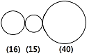
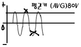

자동차정비기능사 (2006-10-01 기출문제)
1과목: 자동차공학
1. 압축비가 6인 정적 사이클의 이론 열효율은 약 얼마인가? (단 비열비 k는 1.4이다.)
- 48.2%
- 50.2%
- 51.2%
- 53.2%
(정답률: 49%)

2. 디젤 기관의 노킹을 방지하는 대책으로 알맞은 것은?
- 실린더 벽의 온도를 낮춘다.
- 착화지연 기간을 길게 유도한다.
- 압축비를 낮게 한다.
- 흡기 온도를 높인다.
(정답률: 65%)
3. 연소실의 체적이 48cc이고, 압축비가 9:1인 기관의 배기량은 얼마인가?
- 432cc
- 384cc
- 336cc
- 288cc
(정답률: 70%)
4. 고압축비, 고속회전기관에 사용되며 냉각효과가 좋은 점화플러그는?
- 냉형
- 열형
- 초열형
- 중간형
(정답률: 74%)
5. 윤활유가 연소실에 올라와서 연소 될 때 색으로 가장 적합한 것은?
- 백색
- 청색
- 흑색
- 적색
(정답률: 65%)
6. O2센서의 부착위치로서 가장 적절한 곳은?
- 흡기 다기관 부근
- 배기 다기관 부근
- 에어클리너 부근
- 연료 여과기 부근
(정답률: 66%)
7. 동력전달장치의 드라이브 라인에 슬립 이음을 사용하는 이유로 맞는 것은?
- 진동을 흡수하기 위해
- 추진축의 길이 방향에 변화를 가능하게 하기 위해
- 출발을 원활하게 하기위해
- 회전력을 직각으로 전달하기 위해
(정답률: 75%)
8. 튜브리스 타이어의 특징으로 틀린 것은?
- 못에 찔려도 공기가 급격히 새지 않는다.
- 유리조각 등에 의해 찢어지는 손상도 수리하기 쉽다.
- 고속 주행 하여도 발열이 적다.
- 림이 변형되면 공기가 새기 쉽다.
(정답률: 69%)
9. 수동변속기 차량에서 클러치판은 어떤 축의 스플라인에 끼워져 있는가?
- 변속기 입력축
- 추진축
- 차동 기어 장치
- 크랭크축
(정답률: 72%)
10. 일반적으로 사용되는 축전지 용량 표시방법이 아닌 것은?
- 20시간율
- 25암페어율
- 냉간율
- 50시간 방전율
(정답률: 50%)
11. 전자제어 엔진의 연료압력이 높아지는 원인으로 가장 거리가 먼 것은?
- 연료 리턴 라인의 막힘
- 연료펌프의 첵 밸브 고장
- 연료압력조절기의 진공 누설
- 연료압력조절기의 고장
(정답률: 41%)
12. 산소 센서에 대한 설명으로 알맞은 것은?
- 공연비를 피드백 제어하기 위해서 사용한다.
- 공연비가 농후하면 출력전압은 0.45V 이하이다.
- 공연비가 희박하면 출력전압은 0.45V 이상이다.
- 300℃ 이하에서도 작동한다.
(정답률: 76%)
13. 에어플로우미터(Air flow meter)의 흡입공기량 계측 방법에서 공기의 체적 검출방식인 것은?
- 베인식(Vane)
- 열선식(Hot wire)
- 열막식(Hot film)
- 스로틀 스피드방식(Throttle speed)
(정답률: 57%)
14. 실린더의 직경이 75mm, 행정의 80mm인 4행정 사이클 4실린더 기관의 SAE 마력은 약 몇 PS인가?
- 12
- 13
- 14
- 15
(정답률: 44%)
15. 토크컨버터 내에 록업 클러치의 작동 영역은?
- 중립 시
- 후진 시
- 저속 고부하시
- 고속 저부하시
(정답률: 49%)
16. 디젤기관 연료의 구비조건으로 부적당한 것은?(오류 신고가 접수된 문제입니다. 반드시 정답과 해설을 확인하시기 바랍니다.)
- 착화 온도가 높아야 한다.
- 기화성이 작아야 한다.
- 발열량이 커야 한다.
- 점도가 적당해야 한다.
(정답률: 42%)
17. 클러치에 사용되는 릴리스 베어링의 종류가 아닌 것은?
- 벤 조우형
- 카본형
- 볼 베어링형
- 앵귤러 접촉형
(정답률: 51%)
18. 발전기의 3상 교류에 대한 설명으로 틀린 것은?
- 3조의 코일에서 생기는 교류 파형이다.
- Y결선을 스타 결선, △결선을 델타 결선이라 한다.
- 각 코일에 발생하는 전압을 선간전압이라고 하며, 스테이터 발생전류는 직류전류가 발생된다.
- △결선은 코일의 각 끝과 시작점을 서로 묶어서 각각의 접속점을 외부 단자로 한 결선 방식이다.
(정답률: 63%)
19. 교류발전기의 특징이 아닌 것은?
- 소형 경량이다.
- 저속에서도 출력이 크다
- 회전수의 제한을 받지 않는다.
- 컷아웃 릴레이에 의해 전류의 역류를 방지한다.
(정답률: 46%)
20. 무단 자동변속기(CVT)에서는 다음 중 어느 것에 의해 변속비가 변화하는가?
- 유성기어
- V벨트와 풀리
- 유체클러치
- 하이포이드 기어
(정답률: 54%)
2과목: 자동차정비 및 안전기준
21. 자동차에서 인체에 유해한 가스를 최소화하기 위한 구성품이 아닌 것은?
- EGR밸브
- 캐니스터
- 머플러
- 촉매장치
(정답률: 66%)
22. 타이밍기어의 백래시가 클 때에 일어나는 사항은?
- 밸브 개폐시기가 틀려 질 수 있다.
- 윤활장치의 유압이 높아진다.
- 기관의 공전속도가 빨라진다.
- 점화전압이 낮아진다.
(정답률: 64%)
23. 크랭크핀과 축받이의 간극이 커졌을 때 일어나는 현상이 아닌 것은?
- 운전 중 심한 타음이 발생할 수 있다.
- 흑색 연기를 뿜는다.
- 윤활유 소비량이 많다.
- 유압이 낮아 질 수 있다.
(정답률: 61%)
24. 윤활유 소비증대의 원인으로 가장 적합한 것은?
- 비산과 누설
- 비산과 압력
- 희석과 혼합
- 연소와 누설
(정답률: 74%)
25. 피스톤링을 교환하고 시운전을 하는 도중 피스톤링의 소결이 일어났다면 그 원인은 어느 것인가?
- 피스톤링 이음이 전부 일직선상에 있었다.
- 피스톤링 홈의 깊이가 너무 깊었다.
- 피스톤링 이음의 간극이 너무 작았다.
- 피스톤링 이음의 간극이 너무 컸다.
(정답률: 52%)
26. 전자제어 연료분사 장치 차량에서 시동이 안 걸리는 원인으로 가장 거리가 먼 것은?
- 점화 일차 코일의 단선
- 타이밍 벨트가 끊어짐
- 차속 센서 불량
- 연료 펌프 배선의 단선
(정답률: 75%)
27. 클러치의 릴리스 베어링으로 사용되지 않는 것은?
- 앵귤러 접촉형
- 평면 베어링형
- 볼 베어링형
- 카본형
(정답률: 48%)
28. 조향 핸들의 유격이 크게 되는 원인이다. 틀린 것은?
- 볼 이음의 마멸
- 타이로드의 휨
- 조향 너클의 헐거움
- 앞바퀴 베어링의 마멸
(정답률: 58%)
29. 자동차의 ABS는 자동으로 브레이크를 제어하는 장치로서 바퀴가 Lock-up 되어 미끌림이나 미끄러짐을 방지하는 것이다. 바퀴의 Lock-up을 감지하는 것은?
- 브레이크 드럼
- 하이드로릭 유니트
- 휠 속도 센서
- E.C.U
(정답률: 67%)
30. 디스크 브레이크에 대한 설명 중 맞는 것은?
- 드럼 브레이크에 비하여 브레이크의 평형이 좋다.
- 드럼 브레이크에 비하여 한쪽만 브레이크 되는 일이 많다.
- 드럼 브레이크에 비하여 베이퍼록이 일어나기 쉽다.
- 드럼 브레이크에 비하여 페이드 현상이 일어나기 쉽다.
(정답률: 64%)
31. 그림과 같이 왼쪽에서 순서대로 기어 A,B,C, 3개가 있다. A 기어의 토크 4m-kgf, 회전은2500rpm로 돌아갈 때 기어 C의 rpm은 얼마인가? (단, ( )안의 수치는 기어의 이빨수)

- 2000rpm
- 1500rpm
- 1000rpm
- 2500rpm
(정답률: 53%)
32. 타이어 반경 0.7m 인 자동차가 회전속도 480rpm으로 주행할 때 회전력이 12m-kgf 이라고 하면 이 자동차의 구동력은?
- 약 8.6kgf
- 약 7.5kgf
- 약 4.3kgf
- 약 17.1kgf
(정답률: 28%)
33. 앞바퀴 얼라이먼트의 역할이 아닌 것은?
- 조향 핸들의 조작을 작은 힘으로 쉽게 한다.
- 조향 핸들에 알맞은 유격을 준다.
- 타이어의 마모를 최소화 한다.
- 조향 핸들에 복원성을 준다.
(정답률: 40%)
34. AC발전기에서 스테이터는 DC발전기의 무엇에 해당되는가?
- 전기자
- 로터
- 정류기
- 계자코일
(정답률: 43%)
35. 축전지 격리판의 요구조건이 아닌 것은?
- 다공성 일 것
- 기계적 강도가 있을 것
- 전도성 일 것
- 전해액 확산이 잘될 것
(정답률: 55%)
36. 점화플러그에서 불꽃이 발생하지 않는 원인 설명 중 틀린 것은?
- 점화코일 불량
- 파워 TR 불량
- 고압 케이블 불량
- 밸브간극 불량
(정답률: 59%)
37. 전자제어 엔진에서 점화장치의 1차 전류를 단속하는 기능을 갖고 있는 부품은?
- 점화 스위치
- 파워 TR
- 점화 코일
- 타이머
(정답률: 62%)
38. 전자제어 기관 인젝터의 연료 분사량과 관계없는 것은?
- 분구의 면적
- 연료의 압력
- TDC센서
- 통전시간
(정답률: 42%)
39. 스로틀 위치센서(TPS)가 감지하는 상황이 아닌 것은?
- 공회전
- 가속
- 감속
- 크랭킹
(정답률: 74%)
40. 자동변속기를 고장진단 하기 전에 미리 행하여야 할 점검 사항이 아닌 것은?
- 오일량 점검
- 스로틀 밸브 케이블 점검 및 조종
- 메뉴얼 링크의 외관 점검 및 조종
- 오일 압력 점검
(정답률: 39%)
3과목: 안전관리
41. 자동변속기 유체 클러치의 구성품이 아닌 것은?
- 터빈
- 스테이터
- 펌프
- 가이드 링
(정답률: 39%)
42. 자동차 에어컨의 순환과정 중 맞는 것은?
- 압축기 - 건조기 - 응축기 - 팽창밸브 - 증발기
- 압축기 - 팽창밸브 - 건조기 - 응축기 - 증발기
- 압축기 - 응축기 - 건조기 - 팽창밸브 - 증발기
- 압축기 - 건조기 - 팽창밸브 - 응축기 - 증발기
(정답률: 79%)
43. 전자제어 연료분사 장치에서 연료펌프의 구동상태를 점검하는 방법으로 틀린 것은?
- 연료펌프 모터의 작동 음을 확인한다.
- 연료의 송출여부를 점검한다.
- 연료압력을 측정한다.
- 연료펌프를 분해하여 점검한다.
(정답률: 77%)
44. 얇은 P형 반도체를 중심으로 양쪽에 N형 반도체를 접한 트랜지스터를 무엇이라 하는가?
- PNPN형 TR
- NPNP형 TR
- PNP형 TR
- NPN형 TR
(정답률: 66%)
45. 다음 보기의 그림은 교류신호를 측정한 파형이다. 아날로그 멀티메터로 측정한 평균치가 80V라고 할 때 ECU에서 받아들이는 P-P 전압은 몇 V에 상당하는가?

- 110V
- 150V
- 200V
- 220V
(정답률: 42%)
46. 윤중에 대한 정의이다. 옳은 것은?
- 자동차가 수평으로 있을 때, 1개의 바퀴가 수직으로 지면을 누르는 중량
- 자동차가 수평으로 있을 때, 차량 중량이 1개의 바퀴에 수평으로 걸리는 중량
- 자동차가 수평으로 있을 때, 차량 총 중량이 2개의 바퀴에 수직으로 걸리는 중량
- 자동차가 수평으로 있을 때, 공차 중량이 4개의 바퀴에 수직으로 걸리는 중량
(정답률: 63%)
47. 화물자동차 및 특수자동차의 차량총중량은 몇 톤을 초과해서는 안 되는가?
- 20톤
- 30톤
- 40톤
- 50톤
(정답률: 76%)
48. 제작자동차 등의 안전기준에서 2점식 또는 3점식 안전띠의 골반부분 부착장치는 몇 kgf의 하중에 10초 이상 견뎌야 하는가?
- 1270kgf
- 2270kgf
- 3870kgf
- 5670kgf
(정답률: 62%)
49. 자동차 제동등이 다른 등화와 겸용하는 제동등일 경우 조작시 그 광도가 몇 배 이상 증가하는 것이어야 하는가?
- 1배
- 2배
- 3배
- 4배
(정답률: 66%)
50. 최대적재량이 15톤인 일반형 화물자동차를 15000리터 휘발유 탱크로리로 구조변경승인을 얻은 후 구조변경검사를 시행할 경우 검사하여야 할 항목이 아닌 것은?
- 제동장치
- 물품적재장치
- 조향장치
- 제원측정
(정답률: 63%)
51. 안전장치에 관한 사항 중 틀린 것은?
- 안전장치는 효과 있게 사용한다.
- 안전장치 작업 형편상 부득이한 경우는 일시 제거해도 좋다.
- 안전장치가 불량할 때는 즉시 수리한 후 작업한다.
- 안전장치는 반드시 작업 전에 점검한다.
(정답률: 82%)
52. 다음 그림은 안전표지의 어떠한 내용을 나타내는가?
- 지시 표시
- 금지 표시
- 경고 표시
- 안내표시
(정답률: 80%)
53. 선반작업에서 작업 전에 점검 하여야 할 것이 아닌 것은?
- 급유 상태를 검사한다.
- 양 센터 중심이 일치 되는가 검사한다.
- 회전속도 조정이 되어있는가 검사한다.
- 주축에 센터가 고정 되어있는가 검사한다.
(정답률: 25%)
54. 해머작업을 할 때 주의사항 중 틀린 것은?
- 타격면이 찌그러진 것은 사용치 않는다.
- 손잡이가 튼튼한 것을 사용한다.
- 반듯이 장갑을 끼고 작업한다.
- 손에 묻은 기름은 깨끗이 닦고 작업한다.
(정답률: 72%)
55. 전동공구를 사용하여 작업할 때의 준수사항이다. 올바른 것은?
- 코드는 방수제로 되어 있기 때문에 물이나 기름이 있는 곳에 놓아도 좋다
- 무리하게 코드를 잡아당기지 않는다.
- 드릴의 이동이나 교환 시는 모터를 손으로 멈추게 한다.
- 코드는 예리한 걸이에도 절단이나 파손이 안되므로 걸어도 좋다.
(정답률: 74%)
56. 가솔린기관을 시동하기 전 확인하지 않아도 무방한 것은?
- 냉각수
- 엔진 온도
- 축전지(Battery)
- 윤활유
(정답률: 61%)
57. 부품을 분해정비 시 반드시 새것으로 교환해야 한다. 아닌 것은?
- 오일실
- 볼트, 너트
- 개스킷
- O링
(정답률: 74%)
58. 차에 축전지를 설치할 때 안전하게 작업하려면?
- 두 케이블을 함께 연결한다.
- 접지 케이블을 나중에 연결한다.
- 절연 케이블을 나중에 연결한다.
- 접지 케이블을 프레임에 연결한다.
(정답률: 68%)
59. 드릴링머신의 사용에 있어서 안전상 옳지 못한 것은?
- 드릴 회전 중 칩을 손으로 털거나 불어내지 말 것
- 가공물에 구멍을 뚫을 때 가공물을 바이스에 물리고 작업할 것
- 솔로 절삭유를 바를 경우에는 위에서 바를 것
- 드릴을 회전시킨 후에 머신테이블을 조정할 것
(정답률: 75%)
60. 기계시설의 배치 시 안전 유의사항에 맞지 않는 것은?
- 회전부(기어, 벨트, 체인)등은 위험하므로 반드시 커버를 씌워둔다.
- 발전기, 아크용접기, 엔진 등 소음이 발생하는 기계는 한곳에 모아서 배치한다.
- 작업장의 통로는 근로자가 안전하게 다닐 수 있도록 잘 정돈을 한다.
- 작업장의 바닥이 미끄러워 보행에 지장을 주지 않도록 한다.
(정답률: 80%)
이론 열효율 = 1 - (1/압축비)^(k-1)
여기서 k는 비열비이며, 압축비가 6이므로 다음과 같이 계산할 수 있습니다.
이론 열효율 = 1 - (1/6)^(1.4-1) = 1 - 0.327 = 0.673
따라서 이론 열효율은 67.3%입니다. 하지만 문제에서는 소수점 첫째자리까지만 답을 구하도록 요구하고 있으므로, 67.3%를 소수점 첫째자리에서 반올림하여 67%로 계산합니다.
하지만 보기에서는 48.2%, 50.2%, 53.2%와 같은 다른 선택지도 제시되어 있습니다. 이 중에서 51.2%가 정답인 이유는, 67%를 100으로 나누어서 백분율로 표현하면 67% = 67/100 = 0.67입니다. 이 값을 1에서 빼면 0.33이 되는데, 이 값을 다시 100으로 곱하면 33%가 됩니다. 따라서 이론 열효율이 67%일 때, 실제로 유용한 열을 얻을 수 있는 비율은 33%입니다.
그런데 보기에서는 48.2%, 50.2%, 53.2%와 같은 다른 선택지도 제시되어 있습니다. 이 중에서 51.2%가 정답인 이유는, 33%를 100으로 나누어서 백분율로 표현하면 33% = 33/100 = 0.33입니다. 이 값을 1에서 빼면 0.67이 되는데, 이 값을 다시 100으로 곱하면 67%가 됩니다. 따라서 유용한 열을 얻을 수 있는 비율이 33%일 때, 이론 열효율은 67%가 됩니다.
따라서 압축비가 6인 정적 사이클의 이론 열효율은 51.2%입니다.